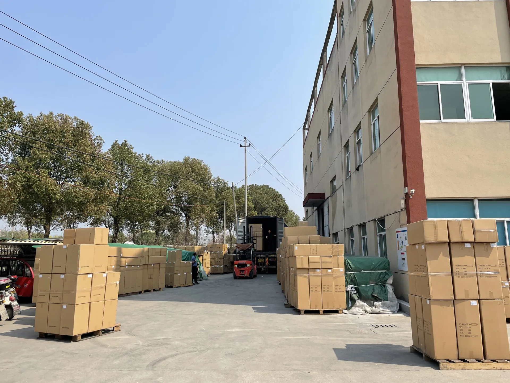

Yuchen Water acompaña proyectos de filtración para distribuidores y marcas.
Yuchen Water participó en Aquatech China / Shanghai International Water Show, una importante feria internacional de tratamiento de agua en Shanghái. Nuestro equipo conversó con compradores extranjeros sobre proyectos OEM y ODM y presentó máquinas RO comerciales, sistemas industriales de ósmosis inversa y carcasas de filtro de acero inoxidable.


Desde la selección de materiales hasta el ensamble y el empaque, nos enfocamos en producción estable, soporte técnico práctico y documentación lista para exportación.
La gama cubre filtración doméstica, filtros de reemplazo para dispensadores, prefiltración, equipos RO comerciales y componentes industriales.
La documentación de calidad y las referencias de ensayo se confirman según el modelo y el mercado de destino.

Los detalles de producción, empaque y envío se revisan por proyecto antes de cotizar.
Logo, etiquetas, empaque, color, soporte, panel y configuración se adaptan a su mercado.
Inspección de materiales, ensamble, presión, caudal y lotes aleatorios apoya pedidos repetidos.
Marcado de cajas, palets, carga mixta y documentos para envíos internacionales.
Yuchen Water acompaña proyectos de filtración para distribuidores y marcas.
Solicitar cotización OEM